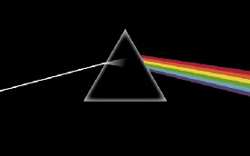
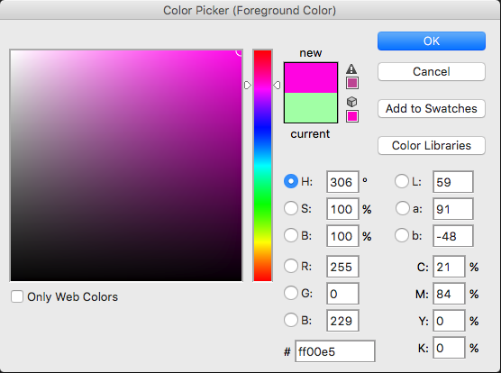
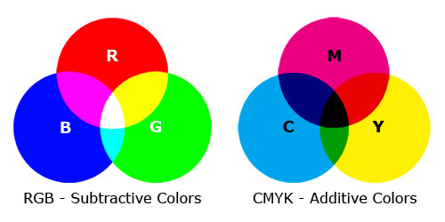
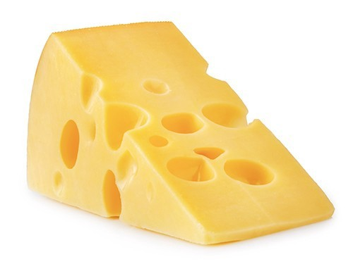
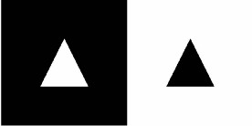
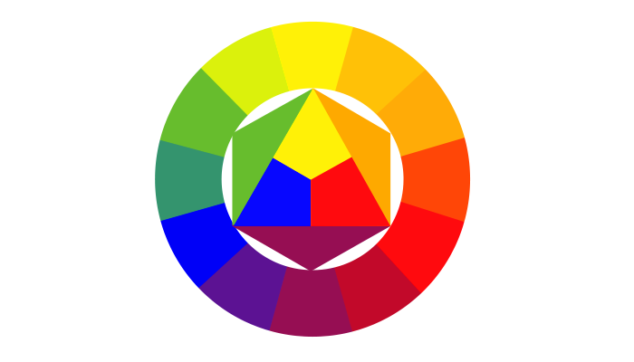
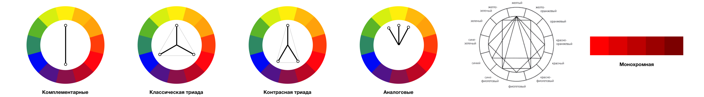
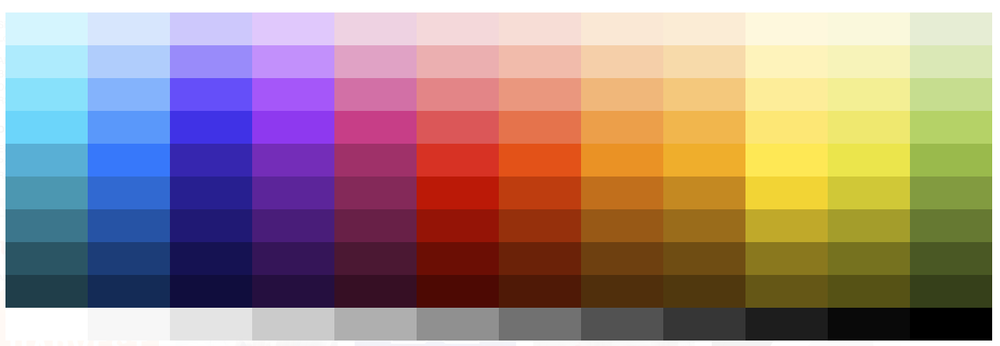
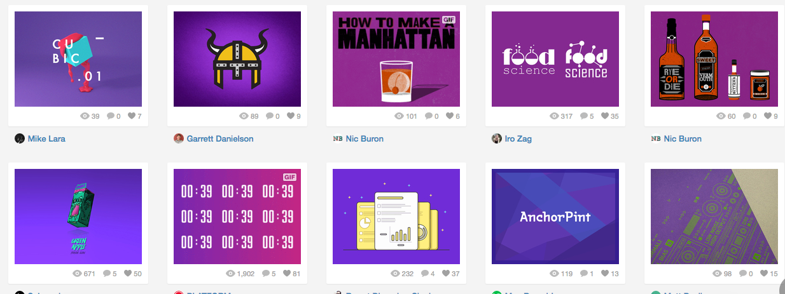

1. Немного теории, для понимания основ.
Дисперсия света
Исаак Ньютон один из первых кто смог разложить белый солнечный свет на цветовой спектр — позднее это назвали “Дисперсией света”.
Опыт заключался в следующем: он пропускал солнечный свет через призму. В ней луч света расслаивался на цвета и выводился на экран.

Цвета которые выводились называются спектральными или проще — чистые цвета. Это красный, оранжевый, желтый, зеленый, синий и фиолетовый.
Если все эти цвета пропустить обратно через собирательную призму, то мы опять получим белый цвет.
Дополнительные цвета
Если мы соберем красный + оранжевый + желтый в один цвет, и зелены + синий + фиолетовый в другой, а потом смешаем два получившихся цвета то получим белый.
(красный + оранжевый + желтый) + (зеленый + синий + фиолетовый) = белый
Даже если мы смешаем только отдельные противоположные цвета красный + зеленый, оранжевый + синий, желтый + фиолетовый то в результате получим белый.
Пример: Если мы удалим из спектра один цвет, к примеру красный и с помощью линзы соберем оставшееся цвета: оранжевый + жёлтый + зеленый + синий + фиолетовый, то результатом у нас будет зеленый цвет. Потому что зеленый является дополнительным цветом по отношению к удалённому нами красному. Почему именно такие соотношения “зеленый — красный” расписано ниже.
Вычитаемые цвета
Если перед лучом света поставить фильтр который пропускает только синий цвет, а за ним фильтр пропускающий только красный цвет, то оба фильтра вместе не пропустят свет и дадут чёрный цвет или темноту. Потому что синий фильтр пропускает только синий цвет, а красный фильтр в свою очередь поглощает все, кроме красного (который уже был поглощен синим фильтром).
Поглощаемые в физическом эксперименте цвета называются также вычитаемыми.
Параметры цвета
- 1. Тон / Hue — это то, что мы имеем в виду, говоря «цвет». синий, красный, зеленый, оранжевый, фиолетовый и тд.
- 2. Насыщенность / Saturation — параметр цвета, характеризующий степень чистоты цветового тона.
- 3. Яркость / Brightness — обозначает степень отличия цвета от белого или черного.

Что такое RGB, CMYK, HEX и чем они отличаются
RGB (Red, Green, Blue) — аддитивная (сложение) цветовая модель. Основные цвета которой красный, зеленый и синий. Это значит, что при сложении всех цветов у нас получится белый. Такая модель используется во всех электронных устройствах. Записывается в виде: rgb(0,0,0), каждый из цветов может варьироваться от 0 до 255 включительно, где (0,0,0) — черный цвет, (255,255,255) — белый. Дополнительно может добавляться четвертый параметр — аlpha канал, который означает насколько прозрачен цвет. Alpha канал может принимать значения от 0 до 1, к примеру rgba(31,104,2, 0.8).
HEX — это RGB в шестнадцатеричной системе. Выглядит таким образом #102945, первые две цифры отвечают за красный цвет, вторые за зеленый и третьи за синий. Каждый символ может принимать значения: 0,1,2,3,4,5,6,7,8,9,a,b,c,d,e,f. Где #000000 — черный цвет, а #ffffff — белый.
CMYK (Cyan, Magenta, Yellow, Key color) — субтрактивная (вычитание) схема формирования цвета. Состоит из голубого, пурпурного, жёлтого и ключевого — черного цвета. Эта модель используется в полиграфии при цветной печати. Бумага, как и все материалы, отражает свет, поэтому считают, какое количество света отразилось от поверхности. Несмотря на то, что чёрный цвет можно получать смешением в равной пропорции пурпурного, голубого и жёлтого красителей, по ряду причин (чистота цвета, переувлажнение бумаги, стоимость и др.) такой подход неудовлетворителен, поэтому используют отдельно черный цвет.

Почему мы видим цвета такими?
Световые волны сами по себе не имеют цвета. Цвет возникает лишь при восприятии этих волн человеческим глазом и мозгом.
Цвет предметов возникает, главным образом, в процессе поглощения волн. Желтый сыр выглядит желтым потому, что он поглощает все остальные цвета светового луча и отражает только желтый. Когда мы говорим: «этот сыр желтый», то мы на самом деле имеем в виду, что молекулярный состав поверхности сыра таков, что он поглощает все световые лучи, кроме желтого. Сыр сам по себе не имеет никакого цвета, цвет создаётся при его освещении.

2. Как мы воспринимаем цвета. Психология цвета
Сам цвет не выражает нечего. Его содержание определяется контекстом. Значение цвета может быть определено только с помощью его отношения к другому цвету. Если изобразить светлую фигуру на белом фоне, и эту же фигуру на черном, то на белом фоне она кажется темнее, производя впечатление лёгкого нежного тепла. На чёрном же становится чрезвычайно светлым и приобретает холодный, агрессивный характер.

Согласно данным одного из исследований, персональные предпочтения, опыт, воспитание, культурные различия и контекст зачастую искажают эффект, который оказывают на нас отдельные цвета.
Пользователи не понимают нашего цветокодирования. Желтый значит «веселый» для вас, но для для других это может значить «не здоровый» или «блевотный». Каждый человек воспринимает цвета очень субъективно и зависит это только от его контекста. Он любит одни цвета, и ненавидит другие. И это в значительной степени непредсказуемо. Вы не сможете угадать.
Отличная статья про желтый цвет в кино, если вам хочется больше узнать на реальных примерах, о том как именно контекст влияет на значение цвета.
3. Цветовая гармония
Когда люди говорят о цветовой гармонии они полагаются исключительно на субъективные чувства, в то время как понятие цветовой гармонии является объективной закономерностью. Гармония — это равновесие, симметрия сил. Наши глаза требуют и поражают комплиментарные цвета (противоположные, дополнительные) создавая этим равновесие. Нейтральным цветом считается серый, наш глаз не создает с ним ни какого дополнительного цвета.
Для того что бы создавать гармоничные сочетания, были разработаны различные системы порядка цветов. Это цветовой круг и треугольники для цветов (изображение ниже). Противоположные цвета в этом круге являются дополнительными.

Композиционные схемы
Для цветовой композиции важно количественное отношение цветов. Можно сделать общее заключение, что все пары дополнительных цветов, все сочетания цветов в двенадцатичастном цветовом круге, которые связаны друг с другом через равносторонние или равнобедренные треугольники, квадраты и прямоугольники, являются гармоничными. Эти фигуры можно вращать в пределах круга, все сочетания будут гармоничными.

4. Цветовой контраст
Существует семь типов цветовых контрастов:
- 1. Контраст по тону.
- 2. Контраст светлого и тёмного
- 3. Контраст холодных(синий, фиолетовый) и тёплых(оранжевый, красный, желтый) цветов. (Зеленый цвет может относится и к теплым и к холодным цветам, в зависимости от того, какого цвета в нем больше, желтого или синего).
- 4. Контраст дополнительных цветов (противоположные в круге Иттена).
- 5. Симультанный контраст — это создание иллюзии дополнительного цвета на соседнем оттенке.
- 6. Контраст цветового насыщения (один цвет: яркий, а второй блеклый).
- 7. Контраст количества цвета по соотношению к другому цвету.
5. Как составить свою палитру цветов
Ниже описан лайфхак по выбору цвета от Лауры Элизабет. Всю статью можно прочитать тут.
Выбор основного цвета
В нашем распоряжении имеется 10 миллионов цветов, но нам необходимо выбрать всего один. Этот цвет будет основным для нашего бренда.
Необходимо обосновывать выбор цвета. Несколько советов, как выбрать основной цвет:
- Используйте то, что у вас есть. Если у клиента уже есть логотип с установленным цветом, то обычно это и будет начальный цвет.
- Ликвидируйте цвета ваших конкурентов. Если у одного из ваших сильных конкурентов есть свой фирменный цвет бренда, то не нужно его копировать. Найдите цвета конкурентов, и удалите их из собственных цветовых схем.
- Подумайте о вашей целевой аудитории. Цвета для сайтов похоронного бюро и детского сада, скорее всего, должны очень отличаться. Подумайте, кто будет использовать сайт, и как вы хотите, чтобы они его воспринимали.
- Но не становитесь заложником стереотипов. Если вы разрабатываете сайт для молодых девушек, вы не должны использовать розовый. Избегайте клише, чтобы завоевать доверие.
- Играйте в «слова». Если вы топчитесь на месте, запишите все слова, которые вы связываете с бизнесом клиента. Подбирайте ассоциации, пока не дойдете до самых простых вещей, которые можно ассоциировать с цветом.
Вам нужно выбрать чистый цвет, такие как красный, синий, зеленый, голубой, розовый и тд.
Далее перейдите на сайт Dribbble или Designspiration и нажмите на “Colors”, перед вами появится палитра цветов.

Выберете более подходящий оттенок вашему проекту. Для свежего и энергичного бренда, вам понадобятся более светлые оттенки. Для корпоративных серьёзных сайтов следует выбрать менее яркие оттенки.
Выберите оттенок, и посмотрите все высветившиеся сайты, чтобы увидеть, как наш цвет использовали другие дизайнеры. После этого вы должны выбрать оттенок с помощью пипетки на понравившейся работе. Так у нас уже будет выбран основной цвет!

Создание палитры
Большинство палитр имеет гораздо больше цветов, чем вам вообще когда-нибудь потребуется, особенно учитывая, что нам нужно добавить, в среднем, три нейтральных цвета к каждой схеме. Если вы попытаетесь добавить пять или больше нейтральных цветов, то получится бардак. Всё что вам нужно это два цвета:
- Основной цвет (его мы уже выбрали)
- Цветовой акцент (мы вернёмся к этому чуть позже)
- Белый (нейтральный)
- Темно-серый (нейтральный)
- Светло-серый (нейтральный, необязательно)
Как найти цветовой акцент
Перейдите на сайт Paletton, введите свой цвет в специальное поле (внизу слева). И выберете одну из цветовых схем. Если вам совершенно не нравится, что получается, можете нажать на кнопку “randomize” и выбрать другие похожие оттенки.
Как найти серые оттенки
Для большинства веб-проектов, я считаю нужным использовать всего два оттенка серого: светло серый и тёмно серый. И вам придётся использовать их много. Тёмный оттенок обычно используется для текста, а светлый, чтобы создавать границы со всем белым (обычно для фона).
Чтобы получить гармоничный серый цвет по методу Эрики, нам нужно выбрать два стандартных серых цвета. Затем выполните следующие действия:
- 1. Создайте две формы и залейте их #424242 и #fafafa
- 2. Создайте слой-заливку поверх этих двух фигур.
- 3. Измените её цвет на основной цвет.
- 4. Установите режим смешивания на “Overlay”, а непрозрачность установите в промежутке от 5 до 40%.
- 5. Откройте палитру и скопируйте получившиеся значения.
Цветовая схема готова!
Как применять цветовую схему
Для начала создайте дизайн с помощью серых блоков. Только потом начните его разрисовывать.
Основной цвет используется как на больших фигурах, так и на иконках.
Акцент, выгодно выделяется на фоне основного цвета. Он используется в очень малых областях — кнопках и иконках. Чем меньше вы используете этот цвет, тем больше он будет выделяться.
Тёмно серый цвет мы используем для текста, логотипов и очертания значков. (Не забудьте проработать цвета для иконок — это очень влияет на общую картину).
Белый и светло серый цвета используются как фон.